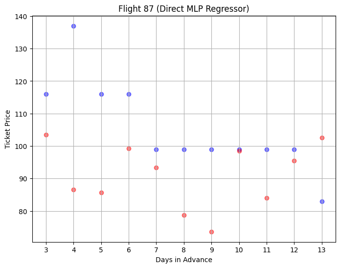
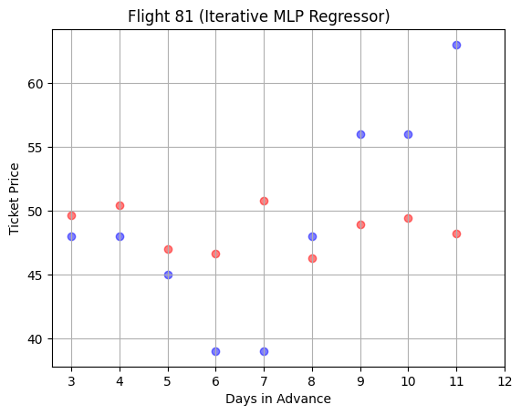
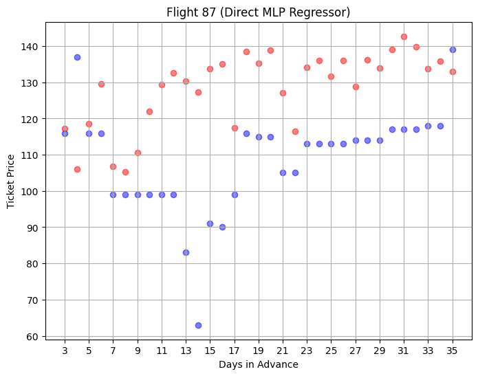

Group 6 Final Report
1) Introduction
a) Literature Review
i) Lu was concerned with flight prices as a time-series and
when to buy/wait. Lu found the AdaBoost-DecisionTree
algorithm had the best performance (61.35% than random
purchase strategy) over the eight routes examined; K-means
and EM to address outliers.
ii) S. Gupta and N. Gupta used a combination of decision tree
algorithms, k Nearest Neighbors (KNN), and linear
regression
on historical trends to forecast flight prices.
Their Random Forest Regressor and Decision Tree Regressor
had r2 scores of .81 and .67 respectively.
iii) Tziridis et al. evaluated different regression models
including random forests and support vector machines on a
dataset of over 1,000 flights, focusing on how departure time
and the number of stops a given flight had would impact the
prediction accuracy. They found that the bagging regression
tree model had the highest accuracy of 87.42%.
b) Dataset Description
i) The data contains ticket prices of 95 flights with route SFO-LAX
from Oct 11 2023 to Oct 20 2023. There are 57 prices provided for
each of the 95 flights, corresponding to the number of days before
departure that the flight had sold for.
c) Dataset Link: Airfare Predictor (pt.1)
2) Problem Description and Motivation
The distribution of flight prices is inherently non-linear and does not follow an easily predictable
distribution. The goal of this paper is to create a machine learning approach to the problem of the
distributions of ticket flight prices when given partial information about the distribution. In other words,
by giving an earlier part of the distribution, the latter part of the distribution will be predicted allowing
for educated choices on when to purchase a flight ticket at the cheapest time. We will provide the models with
ticket prices for 14-57 (44 total days), 25-57 (33 total days), and 36-57 (22 total days) days before departure
for 76 of the 95 flights (80% of the flights).
3) Methods
a) 1+ Preprocessing methods
i) Visualization
For each flight, a data point was created containing a column of ticket prices
and a column containing the number of days. This matrix was used to create a
scatterplot of prices over different number of days befor the plane's departure
ii) Removing Outliers
After visualizing the data, some of the scatter plots showed signs of outliers.
Most of these outliers were located in the couple of days leading up to each flight.
Consequently, we decided to remove the data one and two days in advance for each flight.
This left us with 55 data points (3-57 days before departure) for each of the 95 flights.
b) 3+ Algorithms/Models
i) Direct Architecture
This architecture takes the direct approach to the problem, taking each of the days inside
of the prior distribution as a feature to predict the remaining days inside of the distribution
as an output. Thus if one wished to predict the distribution given prices for 25-57 days before
departure, then each one of those 33 days will be a feature, with 22 outputs (3-24 days before departure).
This approach however suffers from the fact that with only 95 total flights, there are a great deal of
features compared to data points. In this implementation various different algorithms were attempted with
those being Multi-level perceptron regressor, Random Forest Regressor, and Linear Regression with polynomial
features and Lasso regularization.
ii) Iterative Architecture
This architecture attempts to understand the relationships between the points in an iterative
manner. For example, in order to predict the distribution given prices for 25-57 days before
departure, it would be ‘easier’ to predict the price at 24 days before departure rather than
predicting the entire distribution at once. Thus this approach trains multiple models with a step
of 1 day until reaching the endpoint (3 days before departure), progressively increasing the number
of days in the X set in the form of adding a new feature. Overall this architecture has the major drawback
of requiring a different model to understand the relationship between each point and the points prior to it,
which can make this approach much more expensive compared to the direct approach. In the implementation of
this architecture Random Forest Regressor and Multi-level perceptron versions were used.
iii) Iterative Architecture with Soft-Clustering
This architecture uses the iterative architecture, however in addition to each model there
is an unsupervised soft-classification scheme (Gaussian Mixture Model in this case)
which was trained to recognize different types of distributions. For each one of these
gaussians, a separate random forest regressor model was fitted, resulting in 3 random
forest models per step. By taking a weighted average for each point using the
confidence percentages for each gaussian using the current X, this method promises
greater understanding compared to simply using the iterative approach as it will use the
soft-clustering understanding of distributions alongside the supervised learning
predictive elements to create an ideal model at the cost to performance given the fact
that for each step a GMM will need to be fitted, alongside 3 Random Forest
Regressions.
4) Results and Discussion
Accuracy measures the percentage of predicted prices that are within $30 from the actual price for all
19 tested flights.
a) 44 point split
i) Direct Approach Results
1) MLP
The MSE is 755.99
The accuracy is 79.90%

2) RFR
The MSE is 989.08
The accuracy is 80.86%
3) Lasso
The MSE is 5795.66
The accuracy is 60.29%
ii) Iterative Architecture and Iterative with Soft-clustering Results
1) MLP
The MSE is 1095.71
The accuracy is 72.63%

2) RFR
The MSE is 1092.52
The accuracy is 80.53%
3) GMM
The MSE is 1672.85
The accuracy is 77.37%

b) 33 point split
i) Direct Approach Results
1) MLP
The MSE is 632.74
The accuracy 82.54%
2) RFR
The MSE is 1024.48
The accuracy is 80.14%
3) Lasso
The MSE is 4314.65
The accuracy is 65.79%
ii) Iterative Architecture and Iterative with Soft-clustering Results
1) MLP
The MSE is 1959.22
The accuracy is 61.96%
2) RFR
The MSE is 1001.03
The accuracy is 78.23%
3) GMM
The MSE is 1530.63
The accuracy is 76.08%
c) 22 point split
i) Direct Approach Results
1) MLP
The MSE is 659.61
The accuracy is 79.59%

2) RFR
The MSE is 991.64
The accuracy is 77.03%
3) Lasso
The MSE is 2755.09
The accuracy is 70.81%
ii) Iterative Architecture and Iterative with Soft-clustering Results
1) MLP
The MSE is 1808.55
The accuracy is 62.36%
2) RFR
The MSE is 1046.69
The accuracy is 75.44%
3) GMM
The MSE is 2043.51
The accuracy is 73.05%
b) Next Steps
The next steps are primarily with optimizing the individual architectures involved. For
most of them pre-defined hyper-parameters such as max_iters, and learning rate were
not experimented with to find which results in the best accuracy. In addition, more flights
might provide a better model, thus a future step might involve looking for a more
expansive dataset. In addition, especially for scenarios where there are not many days
left to predict inside of the distribution, feature reduction might be undertaken to prevent
the model from overfitting and only use the most important features inside of the dataset.
c) Analysis
The primary drawback encountered was a decrease in accuracy and an increase in error for
all the iterative models as the number of days in advance given to them decreased which makes
sense given that an error in one of the early points would lead to a cascading error further
down the line. Overall, while theoretically interesting, the iterative approach with soft-clustering
proved to be underwhelming, scoring worse than the iterative approach with random forest thus meaning
that with similar datasets this approach should not be tried with our data.
For iterative results, random forest proved to be universally the best in both MSE and
accuracy compared to the MLP regressor, especially when given less days in advance. For direct
results, lasso proved to be consistently the worst, however got more accurate as it was given
less days in advance, likely speaking to overfitting that may have occurred with the deluge of
features that the model is given when there are very few days left to predict. Overall for the
direct approach the MLP regressor was able to have the best MSE, and comparable or better results
compared to random forest. The direct approach seemed more resilient than the iterative approach when
it comes to changing the number of days provided, however unlike the iterative approaches, one must
re-train a direct approach model, rather than use the existing model reducing the flexibility of
application.
5) References
[1] J. Lu, Machine learning modeling for time series problem: Predicting
flight ticket prices,
arXiv.org, https://arxiv.org/abs/1705.07205
(accessed Jun. 11, 2024).
[2] S. Gupta and N. Gupta, Flight fare prediction using machine learning,
https://www.researchgate.net/publication/380296130_Flight_Fare_Pr
ediction_Using_Machine_Learning (accessed Jun. 11, 2024).
[3] K. Tziridis, Th. Kalampokas, G. A. Papakostas, and K. I. Diamantaras,
Airfare prices prediction using Machine Learning Techniques,
https://ieeexplore.ieee.org/document/8081365/ (accessed Jun. 11, 2024).
Gantt Chart
Gantt Chart
Contribution Table
| Name |
Proposal Contributions |
Midterm Contributions |
Final Contributions |
| Francesco Cascone |
Gathering References, Writing the Report |
Preprocessing and Visualizing Data |
Direct Archtiecture, Visualizations |
| William Hudson |
Video Presentation |
Github Pages, Prediction Analysis |
Final Report, Direct Archtiecture, Github Pages |
| Viabhav Patel |
Gathering References, Writing the Report |
Preprocessing Data, Running Random Forests, Running DNN |
Video Presentation |
| Matthew Spenney |
Github Repository, Github Pages |
Github Pages, Prediction Analysis |
Iterative Architectures, Github Pages |
| Jonathan Zhang |
Writing the Report |
Running Random Forests |
Final Report, and Video Slides |